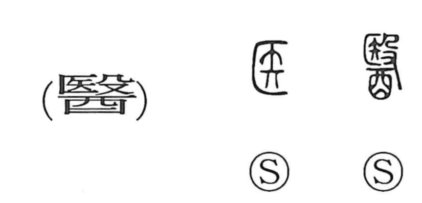

医

Kun: | On: i
medicine ・ doctor ・ to heal ・ cure
Explanation
医 is the modern form of 醫. The simple 医 places a sacred arrow in a concealed enclosure. Adding 殳, striking, makes 殹: the arrow is beaten while invocations are shouted, using its power to drive away the spirits believed to cause illness.
The healer performing this rite was a 巫, a spirit medium. An older form 毉 adds 巫 beneath the striking scene and makes that role explicit. Healing begins as the expulsion of the afflicting power.
The later 醫 has 酉, a wine jar, below 殹. Alcohol was used in treatment to cleanse wounds and stimulate the patient, and it also belonged to the rite. From these practices, the character names healing and the person who carries it out—a physician.